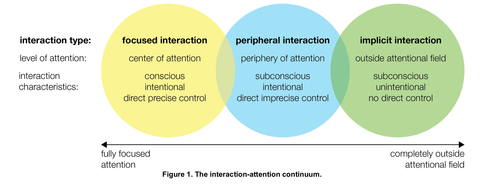
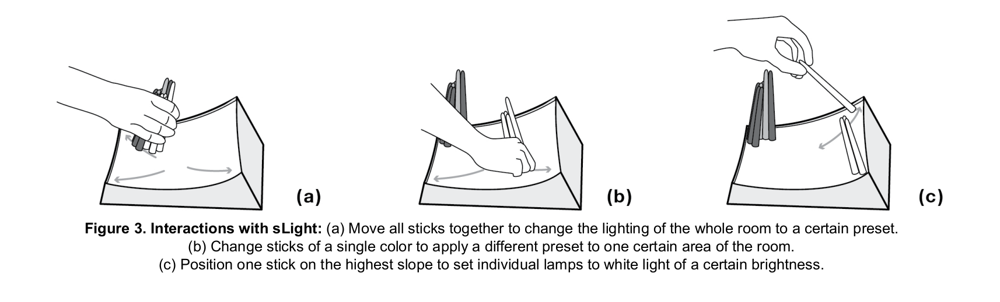

The interaction-attention continuum by Bakker and Niemantsverdriet
Responsive lighting

Interactions with sLight by Bakker and Niemantsverdriet
Fun project that I made for my campus office - a 3D printed moon that glows red when the International Space Station is overhead based on my location (Berkeley) or blue when not. Uses live ISS satellite data from NASA to be accurate #Coding#digitalfab#forFun#isspic.twitter.com/NQ9KqoIXyI